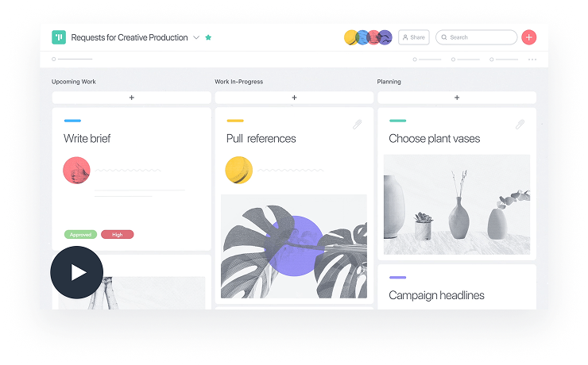
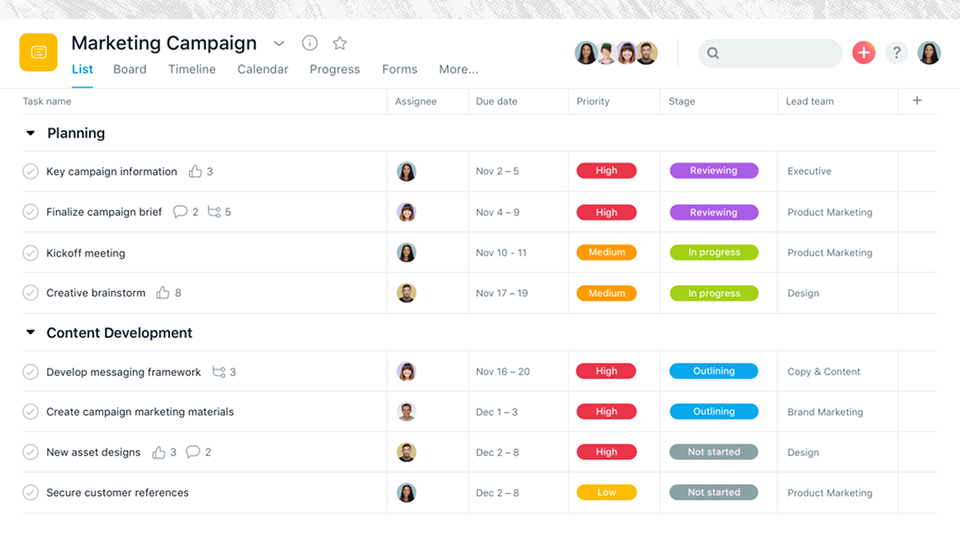
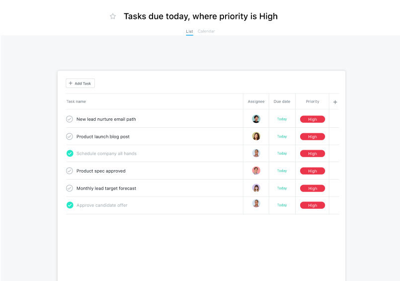

See your team’s plans, track progress, and discuss work in one place. With Asana as your work manager, you’ll stay on top of everything your team’s doing.


Add and assign action items. Teams know what needs to get done, which tasks are a priority, and when work is due.
Focus on tasks currently at hand. Visualize each stage of work and see where things are getting stuck.
See how work maps out over time. Manage dependent, unscheduled, and overlapping tasks, and create plans teams can count on.
Asana enabled us to reduce planning time by 66% and scale from 40 to 200 campaigns per quarter.
Badrul Farooqi — Project Manager
View Figma Case Study
With Asana, we save an estimated 50 hours per week that used to be spent answering email and attending check-in meetings.
Badrul Farooqi — Project Manager
View Figma Case Study
Features
From planning projects to tracking progress, see how your team can
make sure nothing
falls through the cracks.

Use Timeline to create project plans with start dates and dependencies so you can stay on schedule and hit your deadlines—even as work changes.
Learn about Timeline
Kick off projects faster
Report on Progress
Control your work
See everything your team’s working on, all in one place.